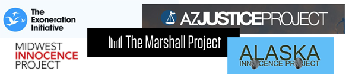
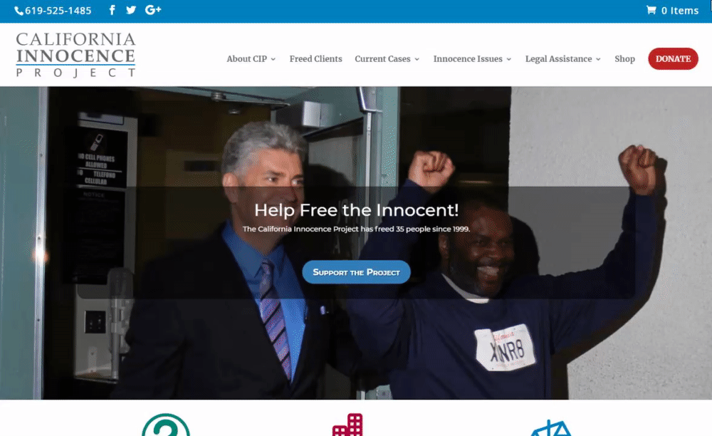
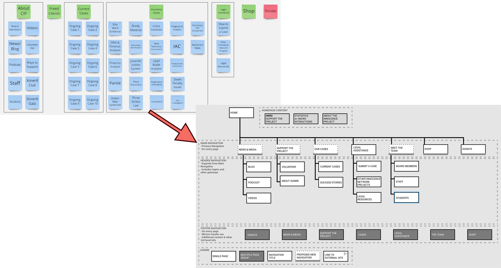
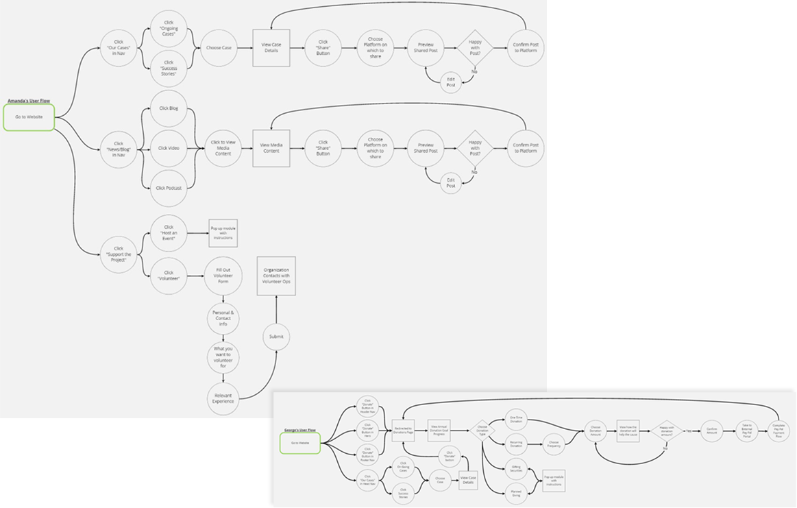

Helping a Non-Profit Harness the Power of Social Media
February 2021
Team:
Henry Bradley
Leonardo Canchola
Danielle Heflin
Nick So
Tools:
Miro
Figma
Trello
Google Drive
Zoom
Time Frame:
2 Weeks
My Role:
- Project Management:
Task Assignment & Tracking - UX Research:
Empathy Map
Competitor Analysis
Definitions - UX Design:
User Flows
Sitemap
Prototype Contribution
Full
Project Leave-Behind
Overview
Problem
The California Innocence Project's web presence needs an update in order to spark interest in modern activists.
- The website's layout and aesthetics are bloated and dated
- The organization does not use social media to increase awareness of their cause
- Donation options are limited and volunteer opportunities are too exclusive
Goal
Improve the site to make it easier for users to spread the word and start grassroots movements.
- Create a contemporary aesthetic that speaks to young acitivists
- Improve social media integration to encourage users to share their support
- Make it easier for people to get involved with the organization
User Research
Research Plan
Interviews
- Individuals affected by unjust incarceration
- People aged 20-30 to gauge general knowledge of unjust incarceration and similar topics
- Organization stakeholders (No response)
Survey
for Quantitative DataInsights
- Respondents believe that some wrongful convictions are an unavoidable side effect of a working justice system, but the current rate is too high
- More than half of respondents believe that prison sentences are often too harsh
- Those affected by alleged wrongful convictions felt the justice system was weighed against them or that they were poorly represented in court
- 100% of respondents think that donating money, raising awareness, and seeking legal aid are the most effective ways to help those affected by wrongful convictions - however, none knew where or how to go about doing so.
Ideation and Definition
Competitor Analysis
Research showed that people want to get involved, but don't know how. Looking at other organizations may inspire ideas for how to increase engagement.
Surprisingly, the California Innocence Project offers even more features than most of its counterparts throughout the country. This is evidence that even though the organization is making the effort to incorporate key features, there is something that is not clicking with users who visit the site.
Redesigning the Sitemap
Since CIP's content is fairly robust, user testing for new features was deprioritized to focus on usability of the existing design. Testing results showed that the website's navigation was bloated and confusing.
 Changing the header labels, reducing the amount of links, and reordering the content, makes the site's navigation more concise and intuitive.
User Flows
Defining flows for two types of users ensures that people can get involved in with the organization no matter their circumstances.
Amanda, a passionate activist with little money to spare, can easily share content on her social media profiles and quickly sign up for volunteer opportunities.
Meanwhile, a successful lawyer named George is too busy to volunteer his time, but has multiple paths to donate and can easily set up recurring donations.
Prototyping and Iteration
Wireframing
Low-fidelity wireframes test how effective the new sitemap and user flows perform.

More user testing confirmed that the sitemap and userflows successfully consolidated the website's information, and made it easier for users to find their preferred method of getting involved. Additional interviews also revealed that low-income users (those likely to visit the site) may be more likely to access the site via a desktop as opposed to mobile devices.
Hi-Fidelity Prototype
After pivoting to a Responsive Design, multiple layouts, color palettes, themes, and animations were tested.

The final round of user tests indicated that a dark background with vibrant colors spoke most directly to young activists. Animations and microinteractions used in a light, tasteful way made the site feel less "corporate" and more fun. Most importantly, creating a prominent and frictionless sharing flow encouraged users to spread the word via social media.
The Final Prototype
Conclusion
Reflection
An organization like CIP can and should harness the power of social media to further its cause. Whether they speak directly to their community, or simply let others spread the word for them - the end result is an amplified voice that can ripple out beyond their current reach and the effects have the potential to shift public outlook entirely. Combine that push for increased social media presence with an updated look and a sleek experience that speaks to young activists and you have a recipe for real social change.
Pivoting from a Mobile-First design to a Responsive design threw a small wrench into the project, which was a bit distressing under the time constraints. However, the team was able to make the necessary adjustments with minimal difficulty thanks to the strong direction provided by Henry. Ultimately, the team was relieved that the pivot occurred early, during low-fidelity wireframing, and not later in the process.
Direction
Next Steps:
- More user research!
- What content resonates?
- What do people want to share?
- Any more resources people want/need?
- Fully-responsive prototype
- Expansion and refinement of Volunteer Form
- New Feature Testing: Donation Rewards and other incentives